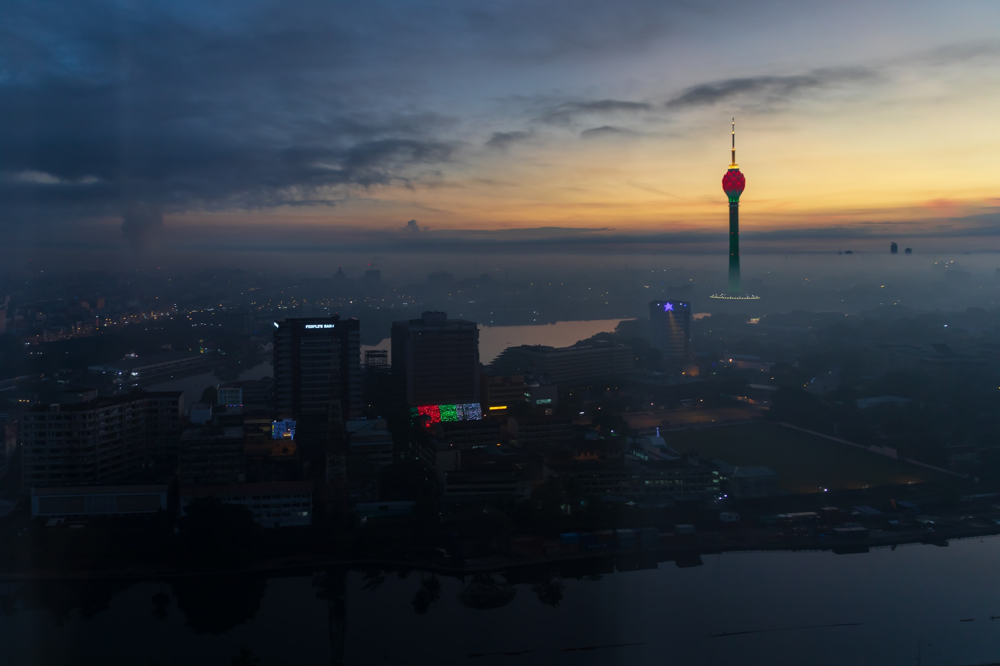
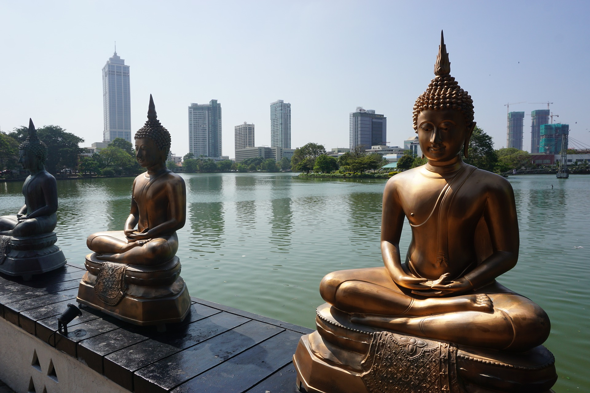

One of the coolest places to visit in Colombo is also one of the city's newest attractions. The Colombo Lotus Tower is South Asia's tallest freestanding structure (368 meters/1,168 feet), and a trip to the top rewards visitors with unobstructed views across Colombo and the surrounding cityscape and sea. The tower, which houses a lot of telecommunications equipment, has a telecom museum, a shopping mall, a revolving fine dining restaurant, a hotel, and indoor and outdoor observation areas. The tower is also a sight to see from the outside - it's covered in LED lighting and presents seasonal themed lighting displays each night. he Lotus Tower, designed to replicate a lotus bulb and flower, simultaneously represents the historic culture of the country and its focus on the future.


The National Museum of Colombo, also called the Sri Lanka National Museum, is the official museum of Sri Lanka and takes you on a journey over the thousands of years of Sri Lankan culture. It's one of those museums that has multiple types of media, from artwork to artifacts, as well as clothing, jewelry, coins, arms, and craftwork. The displays show both the cultural and natural heritage of the country, presented chronologically, starting with pre-history and leading to the present day. Give yourself a few hours to fully explore the collections. The museum is housed in a grand Victorian colonial building in central Colombo near Viharamahadevi Park.
This giant green space is Colombo's Central Park (and its only large open-space area) and provides areas to relax and enjoy (or escape from) the sunshine. The are many fountains in the park, as well as a small zoo. Kids will enjoy the playground. You can visit the Cenotaph (war memorial statue), as well as the national library, both of which are located in the park. The park is also home to a large, 15-foot-tall Buddha statue, the largest cast brass Buddha statue in the country. Now named for one of the country's ancient queens, the park was formerly called Victoria Park. Viharamahadevi Park sits between the National Museum of Colombo and City Hall.

The city's large Colombo Zoo is located in the Dehiwala area. More than just animals in cages, the zoo focuses on education, as well as animal conservation and welfare. One of the oldest zoos in Asia, it hosts almost 3,000 different animals of all shapes and sizes. The zoo has daily demonstrations with keepers of various animals. There is one for the zoo's friendly sea lion, one in front of the elephant enclosure, a bird presentation, and one on snakes. The zoo is open seven days a week, from 8:30am to 6pm. In addition to the urban zoo in Dehiwala, about two hours outside of Colombo, in Pinnawala, there is a larger wildlife park and an elephant sanctuary, both operated by the Department of Zoological Gardens.
Sri Lanka's main beach resort town, Mount Lavinia is a suburb of Colombo. There are many hotels here, and it can be a good alternative to staying in the city. It's an easy drive from downtown Colombo and a fun way to spend an afternoon. The beach is not a protected bay, so the water can be very rough during certain times of the year. Use caution when swimming. There are some very nice restaurants along the beachfront promenade, and the beach itself is filled with vendors selling everything from food to bathing suits. If you stay at the beach past 6pm, you'll be rewarded with an incredible sunset view.